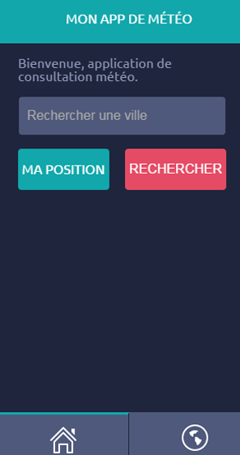

Cordova
Applications mobiles en HTML/CSS/JS
Par Clément Boudon
Les applications mobiles
1/ Application Native
- en Objective-C / Swift
 en Java
en Java en .NET type C#
en .NET type C#- ...
2/ Application vide avec Webview et URL externe
3/ Application hybride
"Cross-Plateform Development Tools"
Les outils hybrides
PhoneGap / Cordova
HTML/CSS/JS
Titanium / Appcelerator

JavaScript
Xamarin

C#
Rhodes
Ruby
Qt

C++
Adobe Air
En concurrence avec PhoneGap chez Adobe
PhoneGap, Cordova, ...
WTF ?
PhoneGap
Outil en ligne de commande de génération d'application mobile à partir d'HTML/JS fixe
PhoneGap
- Développé en 2009 par Nitobi Software
- Racheté par Adobe en 2011
- Adobe fournit le code à l'Apache Foundation
Cordova
Apache Callback Cordova : outil de génération des applications.
Open-source.
PhoneGap Build
PhoneGap Build : outil dans le cloud de génération d'app, fournit par Adobe.
Principes Cordova
1/ App HTML/JS
Client side only. Services serveur sous forme d'API.
Utilisation d'un framework JS : pas obligatoire mais nécessaire pour structurer correctement l'application en JS
API Cordova
Bibliothèque de fonctions pour accès natifs (Geolocation, Camera, Vibration, ...).
2/ Génération d'une app native
App native qui inclut en webview les fichiers HTML.
3/ Test de l'application native
Via les outils propres à chaque plateforme (Android Studio / Eclipse, Xcode, ...).
4/ Diffusion
- Signer et compiler l'application
- Publier l'application
- ????
- PROFIT!!!
Utilisation de Cordova
Postulat
Application HTML/JS fonctionnelle
Création du projet Cordova
cordova create Test1 fr.digi-media.test1 "App Test 1"
Import des sources HTML
Un dossier "./www/" a été créé,
ajout des fichiers sources HTML/CSS/JS
Ajout de la plateforme
cordova platforms add android | ios
Génération des sources des apps natives
Build de l'application
cordova build
Lancement de l'application
cordova run android | ios
Déploiement d'une application IRL
Test / debug
- Android Studio avec les sources Java.
ADM Device virtuel, USB Debug. - Xcode iOS avec les sources Objective-C.
Simulateur intégré.
Signature et soumission Android
- Android Studio : .apk signée (génération de clé à ce moment-là)
- Sur GooglePlay, création d’un compte dev (https://play.google.com/apps/publish/signup/), 25$ (one shot, multi app)
- Envoi de l’.apk
- PROFIT!!!
iOS
- Compte dev Apple (https://developer.apple.com/devcenter/ios/index.action) 99$ / an
- Récupération des certificats puis signature et build depuis Xcode de l’.ipa
- Envoi (préparer dans Apple Dev, penser aux versions, puis envoyer via Xcode)
- More PROFIT!!!
Outils divers
Pre-requis : NodeJS
pour installer Cordova
npm install -g cordova
Pre-requis : Android
- Java JDK (PATH)
- SDK Android (PATHs)
- Apache ANT (PATH)
Pre-requis : iOS
- Avoir MacOS (et Xcode, gratuit)
- Et c'est tout.
AngularJS
Application OnePage, donc structuration du code JavaScript
Extension Ripple
Simulation du contexte mobile Cordova dans un navigateur classique.
Let's code
Application de test météo
Copié/collé http://grafikart.fr/tutoriels/cordova
CSS
À partir d'un template en ligne.
HTML/JS "Front Scratch"
Données externes OpenWeatherMap
Structure JS
AngularJS
Android Only
That's all folks !
Références :
Retrouvez cette présentation sur clementboudon.github.io/Cordova
Powered by Reveal.js